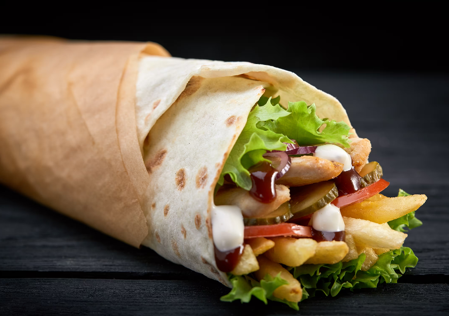
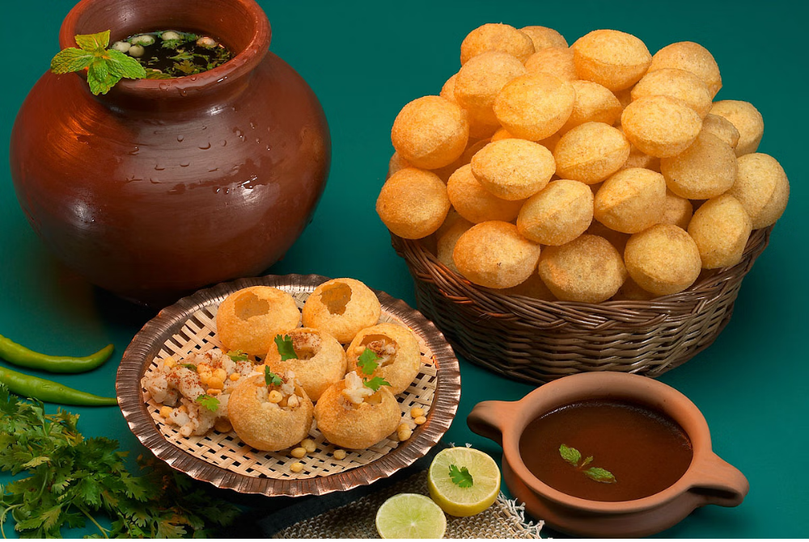
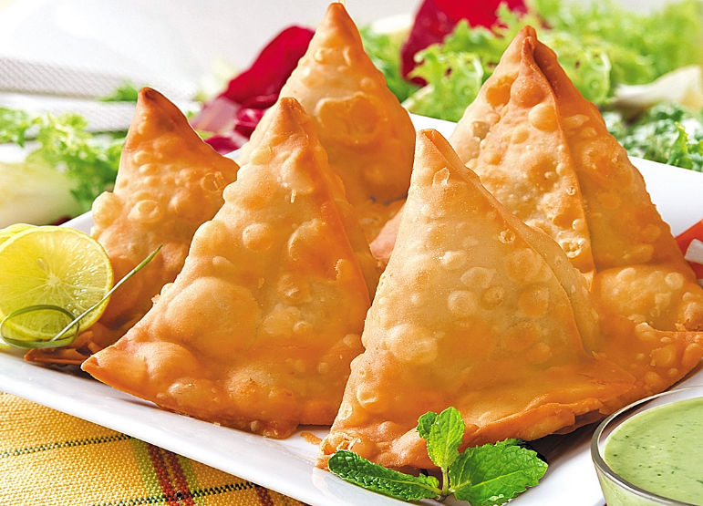
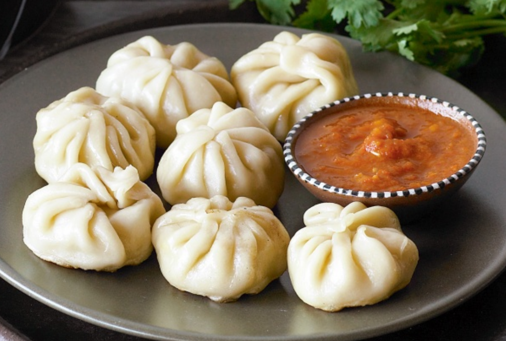
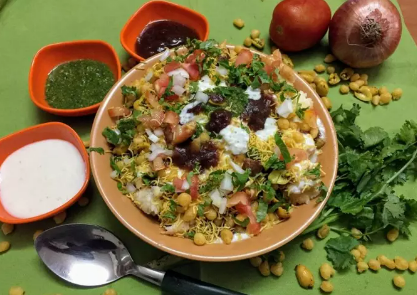

|  |
1. EGG ROLL
A Chinese-style snack similar to a spring roll, consisting of diced meat or prawns and shredded vegetables wrapped in a dough made with egg and deep-fried.
The dish is served warm, and is usually eaten with the fingers, dipped in duck sauce, soy sauce, plum sauce, or hot mustard, often from a cellophane packet.
|
|  |
2. Pani-Puri
Gupchup consists of a round hollow puri (a deep-fried crisp flatbread), filled with a mixture of flavored water (known as imli pani), tamarind chutney, chili powder, chaat masala, potato mash, onion, or chickpeas.
Fuchka (or fuska or puska) differs from panipuri in content and taste. It uses spiced mashed potatoes as the filling. It is tangy rather than sweetish while the water is sour and spicy.
|
|  |
3. Samosa
A samosa or singara is a fried or baked pastry with a savory filling, including ingredients such as spiced potatoes, onions, and peas. It may take different forms, including triangular, cone, or half-moon shapes, depending on the region.
Samosas are often accompanied by chutney, and have origins in medieval times or earlier.
|
|  |
4. Momos
Momo are bite-size dumplings made with a spoonful of stuffing wrapped in dough. Momo are usually steamed, though they are sometimes fried or steam-fried. Meat or vegetables fillings becomes succulent as it produces an intensively flavored
broth sealed inside the wrappers. Variants of the dish developed later in Nepal after it became popular among Asians
|
|  |
5. Chaat
Chaat belongs to the family of savoury snacks that originated in India. The chaat variants are all based on fried dough, with various other ingredients. The original chaat is a mixture of potato pieces, crisp fried bread dahi vada or dahi
bhalla, gram or chickpeas and tangy-salty spices, with sour Indian chili and saunth
|